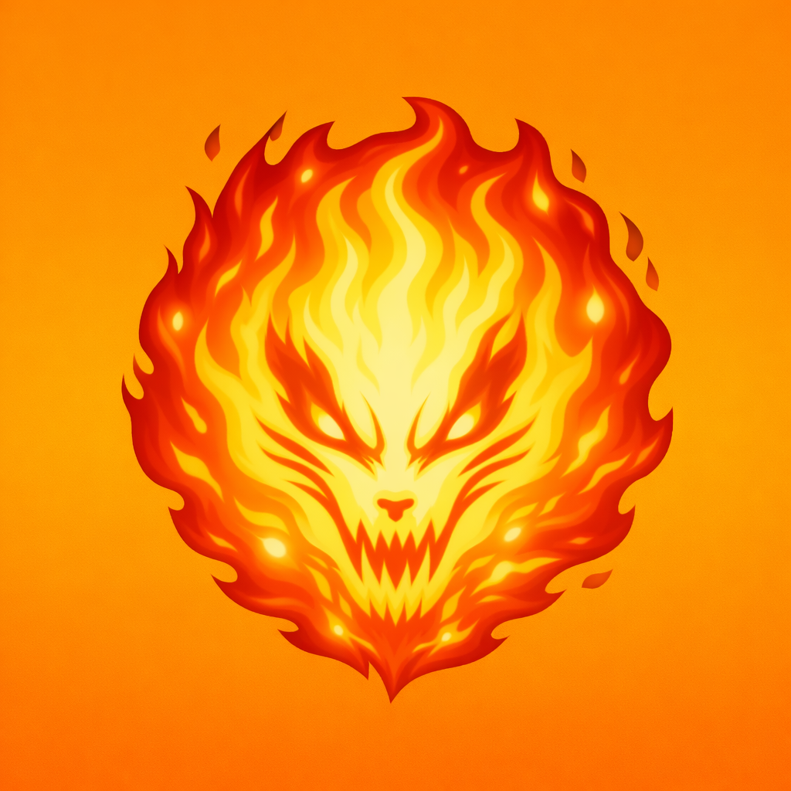
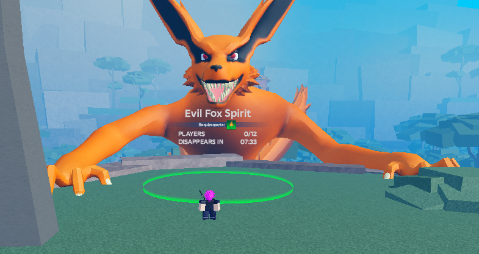
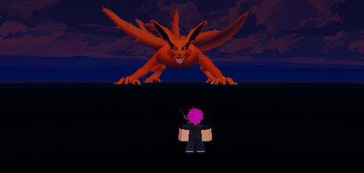
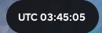

🦊 EVIL FOX RAID
Evil Fox Raid
The Evil Fox Raid appears every 2 hours
(always on the even hours shown on the clock in the
top-right corner of the screen—e.g. 02:00, 04:00, 06:00, etc.),
and you have 30 minutes to defeat it.
To play more than once, run the Raid on a private server.
When the Raid ends, leave and re-enter to run it again.
Entering the Raid requires
Evil Fox Spirit's Chakra Fragment
.
The Evil Fox Spirit's health increases with each
additional player.
Health (1 Player)
Drops


